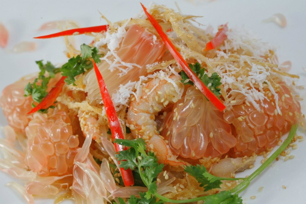

Gỏi Bưởi Tân Triều
Tân Triều thuộc xã Tân Bình, huyện Vĩnh Cửu, tỉnh Đồng Nai nổi tiếng từ bao đời với nghề trồng bưởi. Bưởi ở đây ngon ngọt, thơm, mọng nước và đặc biệt dùng để làm gỏi ăn rất ngon.
Bưởi Tân Triều có nhiều loại với các tên gọi khác nhau như bưởi thanh, bưởi xiêm, bưởi chua, bưởi đường, bưởi ổi, bưởi long… Mỗi loại bưởi tượng trưng cho độ ngon ngọt khác nhau. Bưởi thanh nước nhiều, trái rất nhiều khi vào mùa thu hoạch. Bưởi xiêm, bưởi long có vị ngọt nhưng trái nhỏ. Bưởi ổi trái nhỏ, có thể để dành ăn dần đến sáu tháng, cho dù da có héo khô ở bên ngoài nhưng bên trong vẫn mọng nước và ngọt lịm. Ngon nhất phải kể đến là bưởi đường vừa ngon vừa ngọt.

Theo những người nông dân miệt vườn trồng bưởi ở đây, sở dĩ bưởi Tân Triều ngon ngọt hơn bưởi các vùng khác là nhờ phù sa ven sông Đồng Nai bồi đắp. Đến Tân Triều ăn bưởi rồi mà chưa thưởng thức qua món gỏi thì thật là thiếu sót. Những ai đã từng đến làng bưởi này đều chờ đợi để được thưởng thức món ngon miệt vườn này. Bưởi chọn để làm gỏi phải là bưởi đường còn xanh, chín cây. Cách phân biệt bưởi chín cây với bưởi xanh là nhìn qua các mụn the ngoài vỏ, trái nào nở hết mới là trái già.

Theo đầu bếp của khu du lịch Bửu Long – Đồng Nai thì làm gỏi bưởi phải khéo léo một chút mới không bị đắng về sau. Bưởi cắt vỏ cho đẹp để lấy ruột bưởi ra và giữ vỏ lại, tách rời các tép bưởi. Thịt nạc dăm, tai heo sơ chế thật sạch và luộc chín cắt mỏng. Tôm sông (tôm sông vừa ngọt, vừa mềm) sơ chế sạch rồi cho vào nồi hấp chín, lột vỏ, để lại đuôi cho đẹp. Cà rốt gọt vỏ cắt sợi, rau răm rửa sạch để ráo nước, cắt nhỏ, ớt, gừng cắt sợi.Trộn tép bưởi với hỗn hợp gồm: Tôm, thịt, cà rốt, rau răm, ớt, gừng, nước mắm. Trộn đều hỗn hợp và cho lại vào vỏ trái bưởi, rắc hành phi, đậu phộng rang, ngò lên trên. Nếu gỏi chưa vừa miệng bạn có thể chế thêm chén nước chấm chua ngọt cho đậm đà hương vị.
Gắp một miếng gỏi bưởi ăn vị chua the của tép bưởi, ngon ngọt từ tôm sông dậy thơm mùi cùng với ớt, ngò, đậu phộng, hành phi, và giòn giòn của miếng bánh tráng đi kèm làm người ăn thích thú.